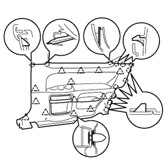

パーキングブレーキ ケーブルASSY NO.3（4WD） 取り外し |
| 1. バッテリマイナスターミナル切り離し |
参照| 2. フロントシートASSY RH取りはずし |
シートトラックアジャステイングハンドルを操作して、フロントシートASSYをリヤモーストにする。
 |
フロントシートレッグカバーのツメのかん合をはずし、フロント側のボルト2本を取りはずす。
シートトラックアジャステイングハンドルを操作して、フロントシートASSYをフロントモーストにする。
フロントシートレッグカバーのツメのかん合をはずし、リヤ側のボルト2本を取りはずす。
ワイヤハーネスをはずし、コネクターを切り離す。
フロントシートASSY RHを車両より取りはずす。
| 3. リヤシートバツクASSY取りはずし |
 |
リヤシートバックを前倒位置にする。
クリップリムーバーを使用して、クリップ2個をはずす。
 |
リヤシートバックカバーをめくる。
ボルト2本をはずし、リヤシートバックASSYを取りはずす。
| 4. リヤシートクッションASSY取りはずし |
 |
クリップのレバーを図の方向に押して、リヤシートクッションASSYの前端部を持ち上げ、クリップのかん合をはずす。
フックのかん合をはずす。
シートベルトをはずし、リヤシートクッションASSYを取りはずす。
| 5. フロントドアスカッフ プレート RH取りはずし |
 |
手で上方に引いてツメのかん合をはずし、フロントドアスカッフプレートRHを取りはずす。
| 6. カウルサイドトリム ボード RH取りはずし |
 |
ツメおよびスタッドのかん合をはずし、カウルサイドトリムボードを取りはずす。
| 7. フロントドア オープニングトリム ウェザストリップ RH切り離し |
| 8. ラップベルト アウタアンカ カバー取りはずし |
 |
ツメのかん合をはずし、ラップベルト アウタアンカ カバーを取りはずす。
| 9. フロントシート アウタベルトASSY RH取りはずし（フロアアンカ部） |
ボルトをはずし、フロントシート アウタベルトASSY RH（フロアアンカ部）を取りはずす。
| 10. リヤシート 3ポイントタイプ ベルトASSY OUT RH取りはずし（フロアアンカ部） |
ボルトをはずし、フロントシート アウタベルトASSY RH（フロアアンカ部）を取りはずす。
| 11. リヤシートバック ヒンジSUB-ASSY RH取りはずし |
 |
ボルトをはずし、リヤシートバックヒンジRHを取りはずす。
| 12. サイドNO.1 トリムASSY RH取りはずし |
|  |
手で車両内側方向に引いて、クリップおよびツメのかん合をはずし、サイドNO.1トリムASSY RHを取りはずす。
| 13. フロントフロア カーペットASSY FR取りはずし |
フロントフロアカーペットASSY FRをめくる。
| 14. フロントフロアサイレンサ パッドSUB-ASSY RR RH取りはずし |
フロントフロアサイレンサパッドリヤRHを取りはずす。
| 15. ワイヤアジャスティング ナット NO.1緩め |
 |
パーキングブレーキインタミデイエイトレバー部のロックナットおよび、パーキングブレーキワイヤアジャスティングナット No.1を緩める。
| 16. パーキングブレーキ ケーブルASSY NO.3切り離し |
パーキングブレーキケーブル No.3をパーキングブレーキケーブルイコライザから切り離す。
| 17. パーキングブレーキ ケーブルASSY NO.2取りはずし |
パーキングブレーキケーブル No.2をパーキングブレーキケーブルイコライザから切り離す。
| 18. リヤタイヤ取りはずし |
| 19. リヤブレーキ ドラム取りはずし（LH側） |
 |
パーキングブレーキを解除し、リヤブレーキドラムを取りはずす。
| 20. リヤブレーキ ドラム取りはずし（RH側） |
| 21. ブレーキシュー取りはずし（LH側） |
 |
フロント側
SSTを使用して、テンションスプリングをブレーキシューASSYから切り離し、パーキングブレーキシューストラットセットLHを取りはずす。
 |
SSTを使用して、リヤブレーキシューホールドダウンスプリングカップ、リヤブレーキシューホールドダウンスプリングおよびリヤブレーキシューホールドダウンスプリングピンを取りはずす。
リヤブレーキシューリターンスプリングを切り離し、ブレーキシュー(フロント側)を取りはずす。
 |
リヤ側
リヤブレーキシューリターンスプリングをブレーキシュー(リヤ側)から取りはずす。
SSTを使用して、リヤブレーキシューホールドダウンスプリングカップ、リヤブレーキシューホールドダウンスプリングおよびリヤブレーキシューホールドダウンスプリングピンを取りはずす。
ニードルノーズプライヤを使用して、パーキングブレーキケーブルASSY No.3を切り離し、ブレーキシュー(リヤ)を取りはずす。
| 22. ブレーキシュー取りはずし（RH側） |
| 23. パーキングブレーキケーブルASSY取りはずし |

パーキングブレーキケーブルASSY No.3取りはずし
ボルト5本をはずし、各ケーブルブラケットをボデーから取りはずす。
 |
ボルトをはずし、パーキングブレーキケーブルASSY No.3をバッキングプレートから取りはずす。
パーキングブレーキケーブルASSY No.2取りはずし
ボルト4本をはずし、各ケーブルブラケットをボデーから取りはずす。
ボルトをはずし、パーキングブレーキケーブルASSY No.2をバッキングプレートから取りはずす。